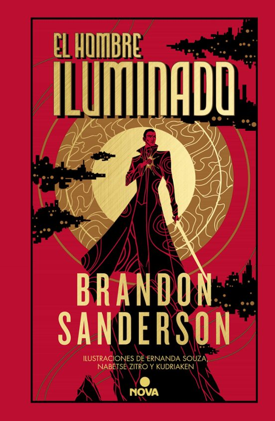

Conoce el Cosmere
Principales sagas
El archivo de las tormentas
Elantris
En pleno océano había una chica que vivía sobre una roca. El océano no era como el que te has imaginado. La roca tampoco era como la que te has imaginado. La chica, en cambio, quizá fuera como la que te has imaginado, siempre que la hayas imaginado reflexiva, de hablar suave y demasiado aficionada a coleccionar tazas y vasos.
Los hombres solían describirla diciendo que tenía el cabello del color del trigo. Otros afirmaban que era del color del caramelo, o a veces de la miel. Ella se preguntaba por qué los hombres empleaban tantos símiles con la comida para describir los rasgos femeninos. En esos hombres parecía haber un apetito que convenía evitar.
A juicio de ella, «castaño claro» era suficiente descripción, aunque la característica más interesante de su pelo no era la tonalidad, sino su rebeldía. Cada mañana lo domaba heroicamente con cepillo y peine antes de amordazarlo con una cinta y una apretada trenza. Y sin embargo, algunos mechones siempre se las ingeniaban para escapar y ondeaban libres al viento, saludando emocionados a la gente con quien se cruzaba.
Libros del cosmere

